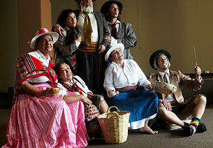

Jueves y Viernes, 11 y 12 de julio | 8:30 P.M.
CUATROTABLAS | Lima, Perú
LOS RÍOS PROFUNDOS (Deep Rivers)
Escrita por José María Arguedas | Dirigida por Mario Delgado Vásquez
Una amalgama de «todas las sangres» en un solo ámbito. El inevitable mestizaje de pueblos originarios, blancos y otros en un Perú que hasta hace poco estuvo dramáticamente escindido, pero que hoy fluye hacia adelante con la vigorosa energía de una raza mixta que cubre casi todo un continente, empujando al Perú a mirarse a sí mismo, a arrancarse la venda y a partir como un Edipo moderno y liberado. (En español)
Carnival Studio Theater, Adrienne Arsht Center | 1300 Biscayne Boulevard, Miami
Entradas: 305.949.6722 | 866.949.6722 | www.arshtcenter.org